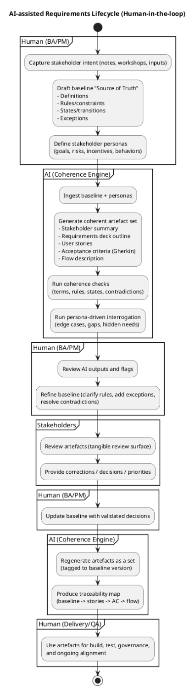
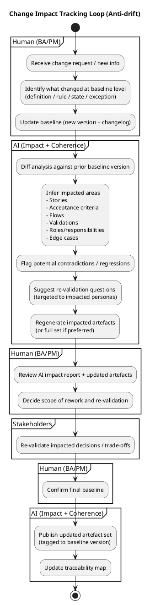
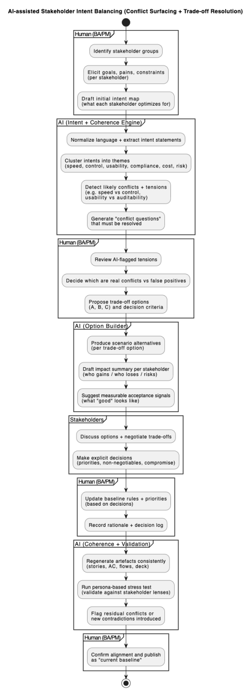
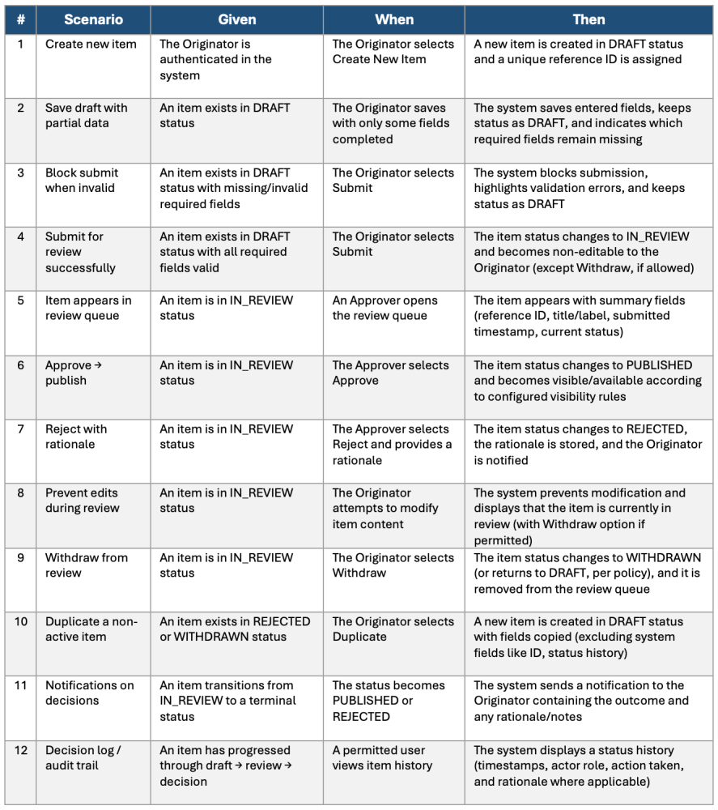

Artificial intelligence is increasingly recognized as an effective resource for enhancing productivity in areas such as writing, summarization, and workflow automation. However, within requirements management, the quality of results is contingent upon establishing well-defined objectives at the outset. Ambiguous intentions or requirements can cause teams to advance quickly but may ultimately result in unsuitable solutions, which can lead to quality concerns, extensive testing needs, and rework.
This article examines how AI can contribute to requirements management by consolidating requirements, generating documents suitable for review, and detecting potential issues early, all with the essential support of human oversight.
Given the current limitations of AI technology, it is recommended that readers carefully assess these approaches, consider peer input, and evaluate their own risk tolerance before adoption.
The centrality of business analysis in requirements management
Business analysis is upstream work, and upstream quality usually sets the ceiling for downstream delivery.
Much of what a team can deliver—and how confidently it can deliver it—is contingent on:
- how well intent is clarified early
- how cleanly needs are translated into workable increments
- how assumptions are surfaced before they harden into scope
- how exceptions, edge cases, and constraints are handled upfront
- how traceability holds as change happens
When upstream work is strong, delivery feels smooth. When upstream work is weak, teams don't just "move slower"—they may spend cycles rebuilding understanding later. AI does not aim to be the silver bullet that can change this reality, but it can strengthen upstream quality by tightening the clarity and validation loops earlier.
The problem of requirements drift
A requirement starts as a conversation. Then it becomes meeting notes. Then a deck. Then user stories. Then acceptance criteria. Then a flow chart. Then test cases.
Somewhere along the way, the original intent gets rewritten so many times that the artefacts start disagreeing with one another. That's requirements drift—and it's one of the most costly (and possibly least visible) failure modes in delivery.
The shift: From "writing assistant" to "requirements holder"
A useful mental model is this:
- Humans own the meaning: intent, constraints, trade-offs, exceptions, priorities.
- AI accelerates the coherence work: structuring, translating, cross-checking, and generating consistent artefacts.
- AI strengthens the interrogation loop: surfacing blind spots, hidden assumptions, and edge cases through stress-testing.
Used this way, AI becomes less like "autofill", and more like a requirements workbench: a container, where fragmented ideas can be held, structured, challenged, and refined.
The workflow: Keeping humans in the loop, always
A proven pattern is to treat requirements as a baseline plus a coherent artefact set: capture intent → establish a baseline → generate artefacts → interrogate → validate → regenerate coherently.

So, putting this together, it's the discipline of:
- maintaining one "source of truth" baseline
- using AI to generate consistent views from that baseline
- using those outputs to accelerate stakeholder validation earlier
A practical approach: how AI can support the requirements lifecycle
1. Start with a baseline that AI can "hold"
Instead of jumping straight to artefacts, start by building a structured baseline—a compact source of truth. This baseline typically includes:
- Definitions (terms, roles, key objects)
- Rules and constraints ("must", "must not", validations, dependencies)
- States and transitions (what statuses exist, when they change, what triggers them)
- Exceptions and boundary conditions (what happens when something goes wrong)
Once the baseline exists, AI can help hold the structure—keeping logic coherent as different representations are generated. Not because AI is authoritative, but because it is good at remembering structure, spotting inconsistencies, and expressing the same logic in multiple formats.
2. Generate artefacts as a coherent set
Requirements drift often happens because artefacts are produced separately, at different times, in different styles. A coherent artefact set derived from the same baseline may include:
- stakeholder-friendly summary (intent + outcomes)
- user stories (actor → intent → value)
- acceptance criteria (often Given/When/Then)
- flow chart / activity flow (how it moves)
- requirements deck structure (what to communicate, and in what sequence)
The point isn't to produce more documentation. It's to keep all views aligned.
3. Use personas to interrogate and stress-test requirements
Many blind spots in requirements aren't technical—they're perspective gaps. Different stakeholders see different risks, incentives, and "gotchas." AI can help by interrogating requirements through persona lenses—not just job titles, but what each persona optimises for and how they behave under pressure. For example:
- a compliance-minded reviewer who is risk-averse and wants auditability
- a rushed operator who needs speed and hates extra steps
- a skeptical approver who assumes submissions are incomplete
- a first-time user who doesn't know the "right" process
AI-driven interrogation can surface missing rules, unclear definitions, unhandled exception paths, ambiguous transitions, and hidden needs stakeholders didn't articulate directly. This doesn't replace stakeholder engagement—it makes those conversations sharper and more productive.
4. Run a consistency loop: find contradictions, drift, and omissions
Once artefacts have been produced, AI can check them against each other. Common consistency checks include:
- Compare the acceptance criteria to the baseline rules—what is missing or inconsistent?
- Does the flow cover every transition described in the rules?
- Are terms used consistently across artefacts?
- List assumptions that are implicit and should be explicit.
This is also where AI can help maintain traceability relationships that are otherwise painful to keep current.
5. Keep a baseline-first change discipline
When requirements change (and they always do), the usual failure mode is patchwork updates. A baseline-first discipline is simple: update the baseline first, then regenerate downstream artefacts. AI makes this feasible without turning every change request into documentation chaos.
Change impact tracking: an anti-drift mechanism
An important risk associated with project delivery is not the original baseline itself, but rather the deviations introduced by ongoing changes. The issue does not lie in change per se; instead, it stems from the unmonitored consequences and ripple effects that may arise.

Used carefully, AI can help teams:
- differentiate and compare baseline versions, and surface what truly changed
- infer which stories, acceptance criteria, and flows are likely impacted
- highlight contradictions introduced by new constraints or changes
- propose re-validation questions that are more specific and targeted
- regenerate only what's impacted—or regenerate the full artefact set for safety and completeness
It doesn't replace analysis, but it reduces the chance that change creates silent drift.
Coherence across stakeholders: AI as a conflict surface
Coherence isn't only a documentation problem. It's also an intent-balancing problem. In real delivery environments, there are competing needs: speed vs control, usability vs compliance, flexibility vs auditability, autonomy vs governance, simplicity vs exception-handling.
Where one stakeholder's needs conflict with another's, the system can sound coherent on paper while hiding tensions that only surface later—during build, UAT, or after release.

AI can act as a conflict surface by helping to:
- identify potential stakeholder conflicts embedded in rules and flows
- highlight trade-offs or assumptions being made implicitly (but not agreed or surfaced explicitly)
- generate questions that must be answered before implementation proceeds
- propose options and scenario variants so humans can choose deliberately
- stress-test requirements through persona lenses to reveal hidden friction
In that sense, AI tightens coherence not just between artefacts, but also across stakeholder intent.
Improving agility: tighter feedback loops, lower cost of change
The value is not "AI writes requirements." The value is that AI can tighten feedback loops in requirements management:
- faster generation of review surfaces
- faster interrogation across stakeholder lenses
- faster detection of contradictions and conflicts
- faster impact analysis when change arrives
That tighter loop promotes a more Agile posture (i.e. "shifting left") in the requirements space: move early, validate often, and reduce the cost of change.
Keeping humans in the loop: AI as a validation accelerator
One underappreciated benefit of AI-generated artefacts is that they pull review forward. When coherent artefacts can be produced quickly—stories, acceptance criteria, flows, deck outlines—stakeholders get something tangible to react to. Documentation becomes a review and collaboration surface:
- it makes assumptions visible
- it forces ambiguity to show up as gaps
- it gives stakeholders something concrete to correct
- it anchors decisions so they don't dissolve after the meeting
AI can draft. But humans validate. And the feedback loop gets tighter.
Sample artefact: Acceptance criteria as a stakeholder review surface
One practical example is a Gherkin-style acceptance criteria table. Rather than treating it as "documentation for the team", it can be positioned as a stakeholder review surface—a concrete way to validate intent, exceptions, and edge cases early.

What's powerful isn't just generating this quickly. It's keeping it coherent with the rest of the requirements set: aligned to the baseline rules and definitions, consistent with the workflow/flowcharts, updated when changes are introduced (anti-drift), and stress-tested through persona lenses to surface missing scenarios and conflicting expectations.
This is where AI becomes more than a writing assistant: it becomes a coherence engine that helps keep humans in the loop—by making review easier, faster, and more complete.
Suggested guardrails
AI, like most good things in life, can be a double-edged sword. AI can accelerate mistakes if it is treated as authoritative. Some guardrails are essential:
- one source of truth (baseline)
- human judgement stays central
- assumptions must be made explicit
- use AI to challenge and interrogate, not to decide
- validate with real stakeholders (keeping humans in the loop, always)
- never ship requirements without review (quality gating)
AI, however useful, can never be a replacement for thinking. It's a tool that supports thinking at scale.
Conclusion
The value of AI in requirements lifecycle management extends beyond enhancing the speed at which teams produce documentation. Its principal benefit lies in maintaining coherence among evolving artefacts such as baseline rules, user stories, acceptance criteria, and process flows, while proactively identifying gaps, inconsistencies, and potential stakeholder conflicts when adjustments remain cost-effective. When applied with care, AI can accelerate feedback cycles, reinforce validation processes, and minimize unnoticed deviations, all while ensuring that human judgement and stakeholder accountability remain central to decision-making.
It is essential to regard AI not as an ultimate authority but rather as a tool for improving coherence and critical analysis. By clarifying collaborative efforts, making decision points explicit, and bolstering delivery robustness, AI offers significant contributions—conditional on teams employing it with appropriate discipline, safeguards, and contextual awareness.